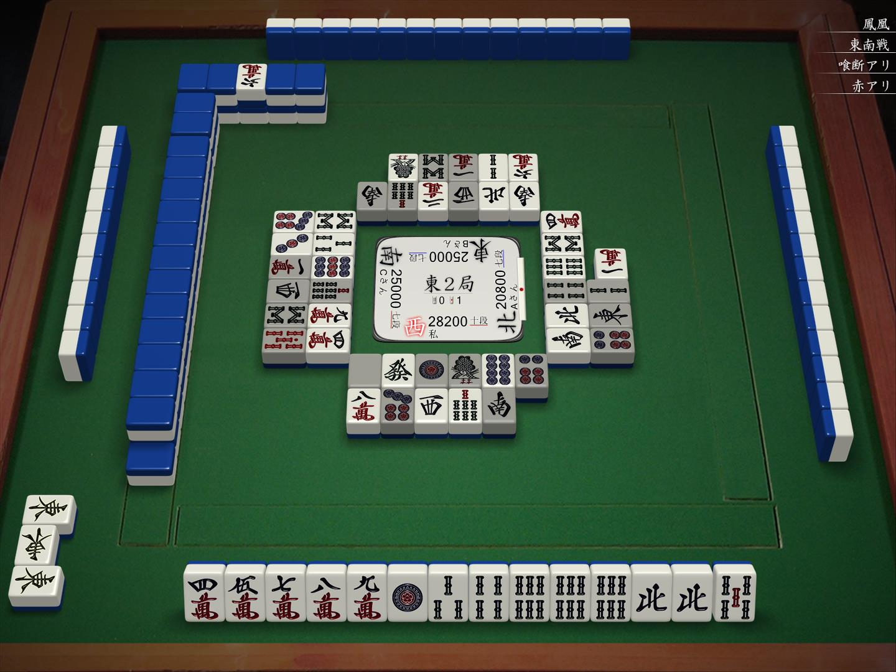
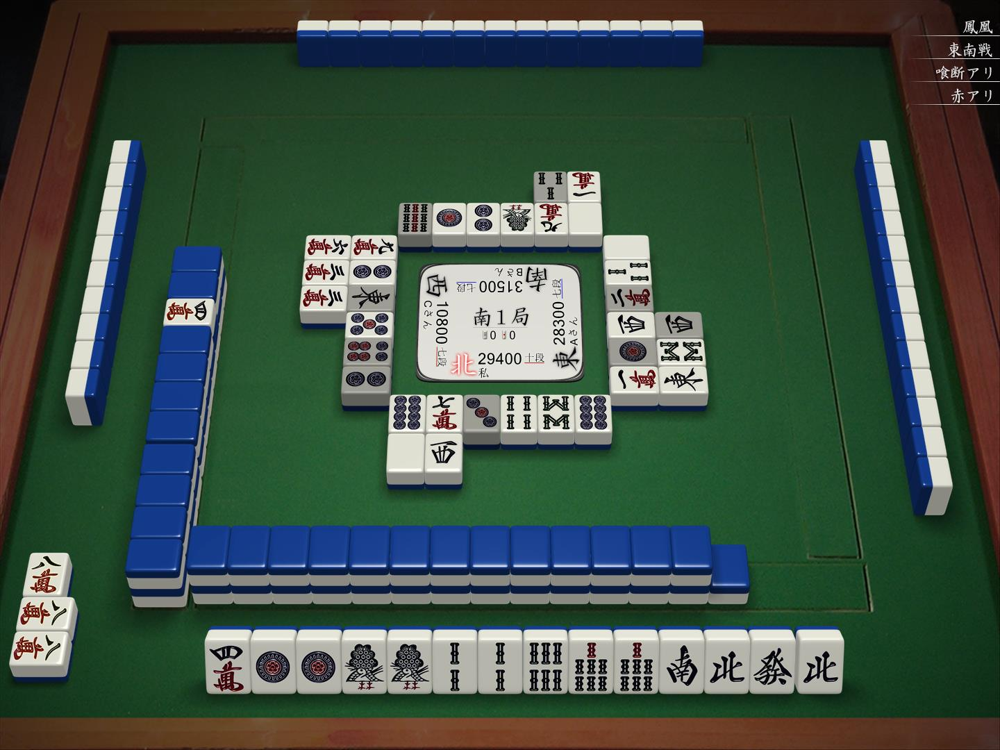
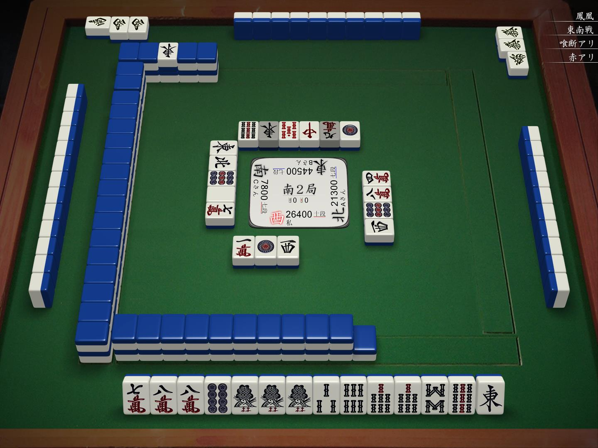
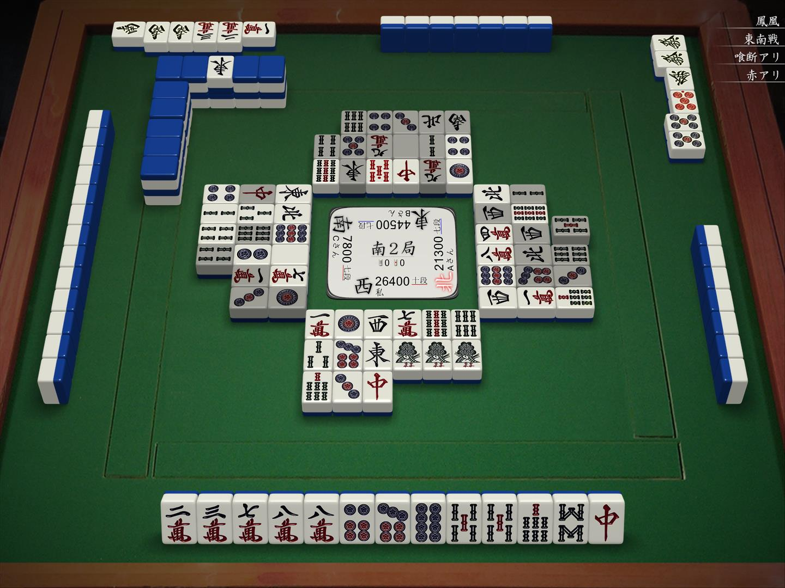

今天看了太くないお的一个牌谱，里面有连续几个非常好的弃胡局，这里来总结一下。

这里自家好型 dora 1 听牌，却被下家先制立直，怎么办？
答案比较简单，直接两北连切，有机会就争取兜听，没机会就直接弃胡。
结果是上家点了立直对对三暗刻的满贯（实际是四暗刻听牌）。

这里七对一向听，何切？
1s！
这里我看了很久，感觉不是很能理解。之后再往下看，发现太くないお从这里开始直接选择了弃胡！
如果要解释的话，感觉就是自己即使听牌，很可能最终胡到也就是立直七对 3200 点，而目前 dora 一张未现，硬上的话很有可能出事。
最终的结果也证明了太くないお的选择是正确的，对家很快 dora 3 高目三色立直，下家 dora 2 三色确追立，最终是对家自摸高目跳满。
感觉这里是很值得学习的，如果是我的话绝对不会想到在这里就弃胡。


这里对家碰 dora 南，直接满贯起步，太くないお立即选择跟切 7m 开始弃胡，放弃了自己的好型两向听，非常的果断。
而到了16巡时，下家打5s，太くないお选择了碰。
这里我也是看了好久才想明白，因为如果不碰的话，太くないお只剩下一次摸牌的机会，那么肯定是没有机会听牌的；而碰了5s切中后，手牌变成了1向听，一旦下一巡7m能切的话，就有听牌赚罚符的可能，即使不能听牌，手里也有7s作为安全牌。这样就在保证下一巡不会放铳的基础上，增加了听牌的可能性。
最终，太くないお无铳吃二，非常完美的结局。